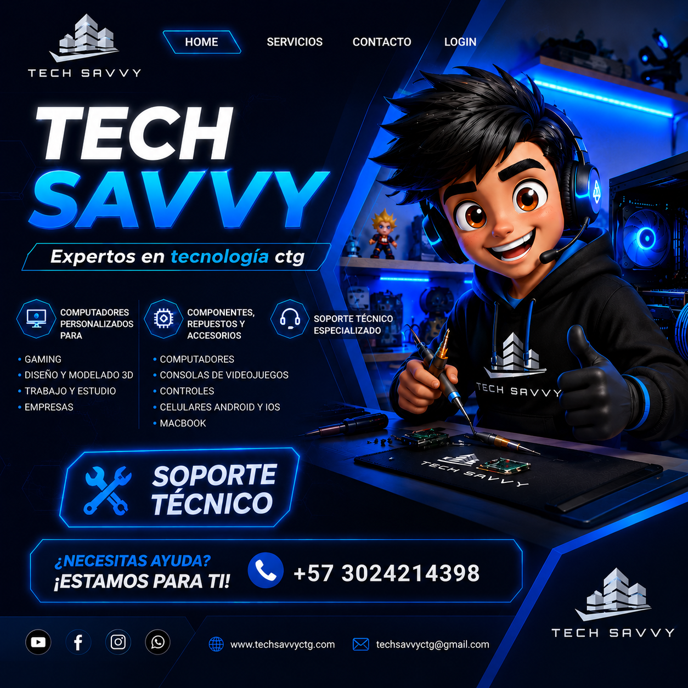

Computadores
Mantenimiento, optimización, instalación de software, cambio de componentes y reparación de portátiles o equipos de escritorio.
 TECH SAVVYCTG SAS · SOPORTEAgendar servicio
TECH SAVVYCTG SAS · SOPORTEAgendar servicio Diagnóstico, reparación y mantenimiento para computadores, celulares y equipos electrónicos. Atención transparente, técnica y cercana.

Un equipo técnico preparado para cuidar, optimizar y recuperar sus equipos.
Mantenimiento, optimización, instalación de software, cambio de componentes y reparación de portátiles o equipos de escritorio.
Diagnóstico de fallas, reemplazo de componentes, configuración y recuperación de funcionamiento.
Evaluación de fuentes, accesorios, redes básicas y equipos electrónicos para el hogar o negocio.
Indique el equipo y la falla que presenta.
Revisamos el equipo y le explicamos las opciones.
Iniciamos el servicio únicamente con su autorización.
Reciba su equipo y las recomendaciones técnicas.
Agende una revisión y reciba orientación del equipo Tech Savvy.
Complete los datos básicos. Le contactaremos para confirmar disponibilidad, diagnóstico y condiciones de recepción.